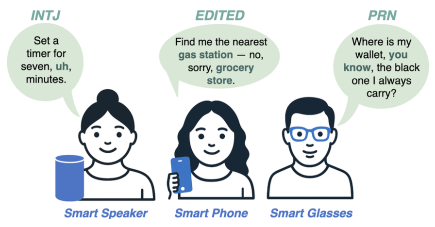

Stephanie Birkelbach
Howdy! I'm an undergrad student at Texas A&M University pursuing dual degrees of a Bachelor's of Science in Computer Science and a Bachelor's of Science in Statistics!
Social Computing & Cultural AI Systems
Language technologies increasingly mediate how people communicate, create, and interpret information at scale. In this line of work, I study and build AI systems that operate within social, cultural, and platform-level contexts, where meaning is shaped by communities, norms, and narratives. My research examines how these contextual forces influence model behavior and system outcomes, with the goal of designing language technologies that better align with the social dynamics in which they are deployed.

|
SocialPulse: An Open-Source Subreddit Sensemaking Toolkit
Stephanie Birkelbach, Maria Teleki, Peter Carragher, Xiangjue Dong, Nehul Bhatnagar, James Caverlee
Collaboration w/ Carnegie Mellon University, Revionics arXiv (Demo) 2026
Understanding how online communities discuss and make sense of complex social issues is a central challenge in social media research, yet existing tools for large-scale discourse analysis are often closed-source, difficult to adapt, or limited to single analytical views. We present SocialPulse, an open-source subreddit sensemaking toolkit that unifies multiple complementary analyses -- topic modeling, sentiment analysis, user activity characterization, and bot detection -- within a single interactive system. SocialPulse enables users to fluidly move between aggregate trends and fine-grained content, compare highly active and long-tail contributors, and examine temporal shifts in discourse across subreddits. The demo showcases end-to-end exploratory workflows that allow researchers and practitioners to rapidly surface themes, participation patterns, and emerging dynamics in large Reddit datasets. By offering an extensible and openly available platform, SocialPulse provides a practical and reusable foundation for transparent, reproducible sensemaking of online community discourse.
@inproceedings{birkelbach26_socialpulse,
|
Disfluency-Aware Speech and Language Understanding
Current speech and language understanding systems are built for fluent text, not for how people actually speak. Disfluencies -- pauses, repairs, hedges, and restarts -- are treated as artifacts to be removed, despite being fundamental to spoken communication. My work challenges this assumption by modeling disfluency as meaningful linguistic structure. I develop models, benchmarks, and evaluation frameworks that operate directly on spontaneous speech, yielding more robust language understanding in real-world conversational settings.|
 |
Z-Scores: A Metric for Linguistically Assessing Disfluency Removal Maria Teleki, Sai Janjur, Haoran Liu, Oliver Grabner, Ketan Verma, Thomas Docog, Xiangjue Dong, Lingfeng Shi, Cong Wang, Stephanie Birkelbach, Jason Kim, Yin Zhang, James Caverlee ICASSP 2025
Evaluating disfluency removal in speech requires more than aggregate token-level scores. Traditional word-based metrics such as precision, recall, and F1 (E-Scores) capture overall performance but cannot reveal why models succeed or fail. We introduce Z-Scores, a span-level linguistically-grounded evaluation metric that categorizes system behavior across distinct disfluency types (EDITED, INTJ, PRN). Our deterministic alignment module enables robust mapping between generated text and disfluent transcripts, allowing Z-Scores to expose systematic weaknesses that word-level metrics obscure. By providing category-specific diagnostics, Z-Scores enable researchers to identify model failure modes and design targeted interventions -- such as tailored prompts or data augmentation -- yielding measurable performance improvements. A case study with LLMs shows that Z-scores uncover challenges with INTJ and PRN disfluencies hidden in aggregate F1, directly informing model refinement strategies.
@inproceedings{teleki25_zscores,
|
| DRES: Benchmarking LLMs for Disfluency Removal Maria Teleki, Sai Janjur, Haoran Liu, Oliver Grabner, Ketan Verma, Thomas Docog, Xiangjue Dong, Lingfeng Shi, Cong Wang, Stephanie Birkelbach Jason Kim, Yin Zhang, James Caverlee arXiv 2025
Disfluencies -- such as 'um,' 'uh,' interjections, parentheticals, and edited statements -- remain a persistent challenge for speech-driven systems, degrading accuracy in command interpretation, summarization, and conversational agents. We introduce DRES (Disfluency Removal Evaluation Suite), a controlled text-level benchmark that establishes a reproducible semantic upper bound for this task. DRES builds on human-annotated Switchboard transcripts, isolating disfluency removal from ASR errors and acoustic variability. We systematically evaluate proprietary and open-source LLMs across scales, prompting strategies, and architectures. Our results reveal that (i) simple segmentation consistently improves performance, even for long-context models; (ii) reasoning-oriented models tend to over-delete fluent tokens; and (iii) fine-tuning achieves near state-of-the-art precision and recall but harms generalization abilities. We further present a set of LLM-specific error modes and offer nine practical recommendations (R1-R9) for deploying disfluency removal in speech-driven pipelines. DRES provides a reproducible, model-agnostic foundation for advancing robust spoken-language systems.
@inproceedings{teleki25_dres,
|
Education
| (2023 - Present) | B.S. Computer Science at Texas A&M University -- minor in Mathematics, emphasis area in Cybersecurity |
| (2023 - Present) | B.S. Statistics at Texas A&M University |
Awards
| (2023-2027) | President's Endowed Scholarship |
| (2023-2027) | Oscar Nelson Opportunity Award |
| (2023-2027) | Dennis W. Holder Scholarship |
| (Fall 2025) | Distinguished Student |
| (Fall 2024) | Dean's Honor Roll |
| (2023) | Saint Pius X High School Valedictorian |
| (2023) | National Merit Finalist |
Experience
|
Texas A&M University Undergraduate Research Assistant May 2025 - Present |
Conducting research in spoken language processing, disfluency in conversational speech, and robust conversational AI under faculty supervision. Evaluating LLMs on their ability to understand spontaneous, disfluent speech compared to written text. Contributing to ongoing work on conversational recommender systems, assessing LLM performance when user input contains disfluencies. |
|
Pelican Industrial Computer Engineering Intern June - August 2025 |
Programmed an ESP32 microcontroller with Arduino IDE to interface with external memory, an OLED display, and navigation buttons. Built a user-friendly interface to display pre-stored outputs, automating hardware validation and reducing manual calculations. Improved diagnostic efficiency by enabling employees to quickly identify malfunctioning hardware components. |
|
Pelican Industrial IT Intern June - August 2024, May - August 2023 |
Implemented a disaster recovery solution by replicating the company’s virtual machine hosting internal management software, ensuring business continuity. Supported secure remote work by setting up VPNs and remote desktop access for employees. Collaborated with IT staff to troubleshoot system issues and strengthen cybersecurity practices. Gained hands-on experience configuring backup routers, domain name registration, and digital certificates to enhance network reliability and security. |
|
The Houstonian Assistant Summer League Coach May - July 2023 |
Coached swimmers ages 6-16 in all four strokes and organized team events, developing leadership and communication skills. |
|
Forever 21 Brand Ambassador June - August 2022 |
Developed customer service and supported daily operations, ensuring efficiency and positive customer experiences in a fast-paced retail setting. |
Certifications
| (Issued August 2025 - Expires August 2028) | CompTIA Security+ |